Calibrated dynamic modeling for force and payload estimation in hydraulic machinery
한줄 요약 — 대형 유압 굴착기를 별도 힘 센서 없이 정밀 힘 계측 장치로 바꾸기 위해 압력-토크 변환과 관성·마찰·중력의 구조화된 보정을 결합했으며, 25 t 장비의 55회 시험에서 페이로드 평균 오차 5.7 kg, 말단 힘 방향 평균 오차 13°, 추정 시간 평균 0.4 ms를 보였다.
1.연구 배경 및 동기
대형 굴착기에서 힘을 알아야 하는 이유와 기존 모델의 빈틈
자율 굴착은 버킷 궤적만 맞추는 위치 제어 문제로 끝나지 않는다. 지반을 파고 암석을 들어 올릴 때 실린더 힘과 말단 힘을 알아야 과부하를 피하고, 작업 결과를 계량하며, 접촉 제어와 고장 진단까지 수행할 수 있다. 그러나 대형 굴착기의 핀이나 버킷에 다축 힘 센서를 달기는 충격·오염·비용 때문에 어렵다. 논문은 이미 기계에 있는 실린더 압력과 관절 자세를 이용해 힘을 복원하는 방향을 택한다.
압력을 실린더 힘으로 바꾸는 식 자체는 단순하지만, 실제 측정 토크에는 링크와 적재물의 중력, 가속에 따른 관성, 밸브·실린더의 마찰, 구심 항이 함께 들어간다. CAD 질량·관성값이나 공칭 실린더 치수를 그대로 쓰면 제작 공차와 부착물 변경, 호스·오일의 영향이 누적된다. 특히 버킷 끝에서 작은 힘 오차를 얻으려면 각 동역학 성분을 현장 장비에서 식별하는 절차가 필요하다.
저자들은 Coriolis 항이 최대 관절 속도 약 0.7 m/s인 대상 동작에서 중력 항보다 두 자릿수 작음을 시뮬레이션으로 확인하고, 계산량과 식별성을 위해 우선 제외한다. 그 대신 압력-토크 변환 계수, 관성, 방향 의존 마찰, 중력 파라미터를 서로 다른 운동 데이터로 분리해 보정하고, 최종 잔차 토크를 Jacobian으로 말단 힘에 매핑한다.
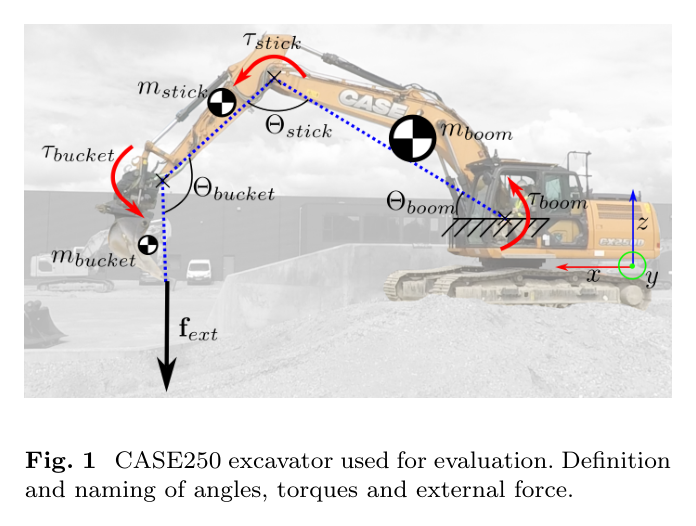
원문 Figure 1 · PDF p.2 — Fig. 1 CASE250 excavator used for evaluation. Definition and naming of angles, torques and external force.
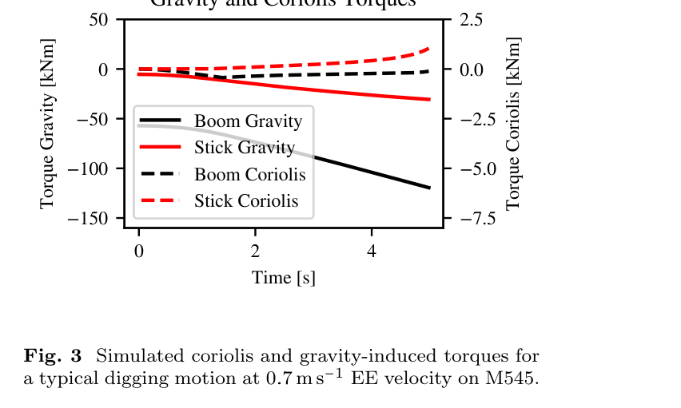
원문 Figure 3 · PDF p.5 — Fig. 3 Simulated coriolis and gravity-induced torques for a typical digging motion at 0.7 m s−1 EE velocity on M545.
선행 연구의 한계
외부 로드셀이나 계량 장치에 의존하면 굴착 현장 장착성과 내구성이 떨어지고 장비별 확장이 어렵다.
준정적 중력 모델만으로는 가감속과 마찰을 분리하지 못해 반복 계량값의 분산이 커진다.
공칭 CAD·실린더 사양은 실제 기계의 제작 공차와 부착물 구성을 충분히 반영하지 못한다.
학습 기반 보정은 많은 라벨 힘 데이터가 필요하고 물리적 외삽과 장비 이전을 설명하기 어렵다.
이 연구의 기여
대형 유압 굴착기의 기존 압력·자세 센서만으로 동역학과 말단 외력을 추정하는 전체 모델을 제시한다.
실린더 크기, 관성, 마찰, 중력 항을 식별성이 높은 전용 운동으로 순차 보정하는 30분 이내 절차를 구성한다.
12.5~13.5 t급 M545와 25 t CASE250에서 토크, 페이로드, 3차원 말단 힘을 독립 측정 장비와 비교한다.
보정 모델을 임베디드 제어기에 탑재해 1회 추정 평균 0.4 ms의 실시간 실행 가능성을 보인다.
2.방법론 및 시스템 구성
관절별 챔버 압력을 유효 피스톤 면적으로 곱해 실린더 힘을 얻고, 기구학적 모멘트 암을 적용해 관절 토크로 변환한다. 이 측정 토크에서 보정된 무부하 동역학 토크를 빼면 외력에 의한 잔차 토크가 남는다.
보정은 모든 미지수를 한 번에 맞추지 않는다. 실린더 치수는 정지 구간, 관성은 왕복 가감속의 주파수 성분, 마찰은 여러 속도·방향, 중력은 저속 작업공간 운동을 사용한다. 마지막에는 일정한 알려진 페이로드의 중량을 Nelder–Mead로 맞춰 남은 질량 오프셋을 1초 이내에 추정한다.
처리 파이프라인
1
압력에서 관절 토크로 변환
피스톤측과 로드측 압력에 각 유효 면적을 적용해 순 실린더 힘을 계산한다. 관절각으로부터 얻은 실린더 모멘트 암을 곱하여 boom, stick, bucket 관절의 측정 토크를 만든다.
2
식별 운동 설계와 순차 보정
알려진 페이로드를 든 상승·하강 정지 구간으로 압력-힘 계수를 잡고, 0.5~3 Hz 성분이 포함된 동작으로 관성 파라미터를, 네 가지 방향·속도 구성으로 마찰을, 느린 작업공간 궤적으로 중력 파라미터를 식별한다.
3
무부하 토크 예측
중력·관성·방향 의존 마찰 모델을 현재 관절 상태에 평가한다. 각 구성요소를 별도의 물리 항으로 유지하므로 어느 항이 오차를 만들었는지 추적할 수 있고 다른 장비에도 같은 절차를 재사용할 수 있다.
4
잔차 토크와 외력 복원
측정 토크에서 예측 동역학 토크를 뺀 뒤 Jacobian 역전치로 3차원 말단 힘을 계산한다. 페이로드 계량에서는 힘 벡터의 중력 성분을 이용하고, 알려진 물체를 여러 자세에서 들어 반복성·방향 오차를 평가한다.
원문 수식과 의미
실린더 힘 (식 1)
F=A_p p_1-(A_p-A_r)p_2
피스톤 면적 Ap와 로드 면적 Ar을 고려해 extension·retraction 챔버 압력에서 순 실린더 힘을 계산한다.
boom·stick의 측정 토크와 무부하 예측 토크 차이를 Jacobian 역전치로 말단 힘 벡터에 변환한다.
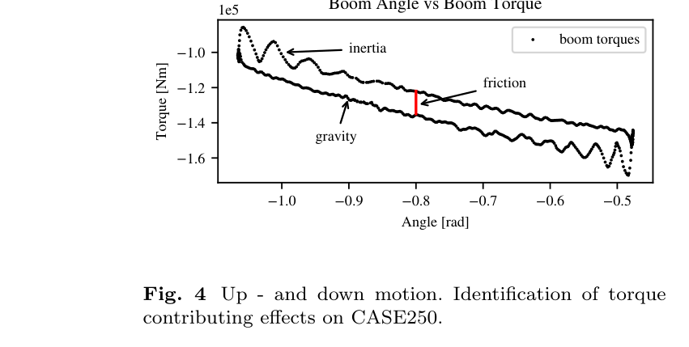
원문 Figure 4 · PDF p.6 — Fig. 4 Up - and down motion. Identification of torque contributing effects on CASE250.
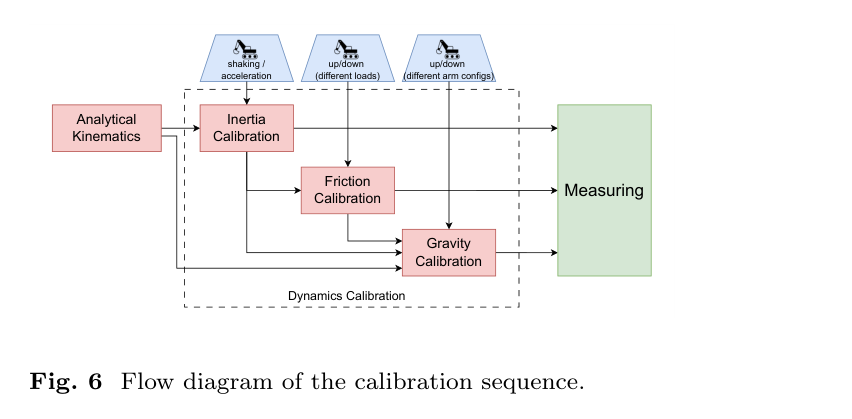
원문 Figure 6 · PDF p.9 — Fig. 6 Flow diagram of the calibration sequence.
3.핵심 기술
물리적으로 분해된 lumped-parameter 모델
링크별 CAD 파라미터를 모두 따로 식별하면 관측 불가능한 조합과 과적합이 생긴다. 논문은 관절 토크에 실제로 나타나는 질량·무게중심·관성의 조합을 lumped parameter로 재표현해 선형 또는 저차원 최적화가 가능하게 한다.
중력과 관성의 효과가 다른 운동 구간에 나타나도록 데이터 수집을 설계한다. 이 구조는 라벨 외력 데이터 없이도 무부하 모델을 만들고, 부착물이나 장비가 바뀌면 같은 순서로 재보정할 수 있다는 장점이 있다.
관측 가능한 파라미터 조합만 식별
중력·관성·마찰 데이터를 의도적으로 분리
Coriolis 생략의 크기를 사전 시뮬레이션으로 확인
방향·속도 의존 마찰 보정
유압 구동계 마찰은 단순한 상수 부호 함수가 아니며 상승과 하강, 속도에 따라 압력 잔차가 달라진다. 저자들은 여러 방향과 속도의 토크 궤적을 모아 관절별 마찰 곡선을 식별한다.
마찰을 중력으로 흡수시키지 않기 때문에 동일 페이로드를 서로 다른 자세와 운동 방향에서 들어도 계량값이 덜 흔들린다. 이는 평균 오차뿐 아니라 55회 측정 표준편차를 크게 줄이는 핵심이다.
상승·하강 비대칭 반영
속도별 토크 잔차 식별
작업 자세 변화에 대한 계량 반복성 개선
센서리스 외력 및 페이로드 추정
보정이 끝나면 실린더 압력과 관절 상태만으로 매 제어 주기 외력 벡터를 계산한다. 별도 힘 센서를 쓰지 않으므로 장비 하드웨어 변경이 작고, 버킷뿐 아니라 다른 작업기에도 기구학 정보만 바꿔 적용할 여지가 있다.
일정 물체를 든 배치에서는 자세별 중력 방향과 추정 외력이 일치하도록 페이로드를 최적화한다. 이 후처리는 1초 미만이며 온라인 제어기에서 평균 0.4 ms, 최대 1.4 ms로 수행됐다.
기존 압력·자세 센서 재사용
3차원 힘 방향과 크기 동시 추정
임베디드 실시간 실행
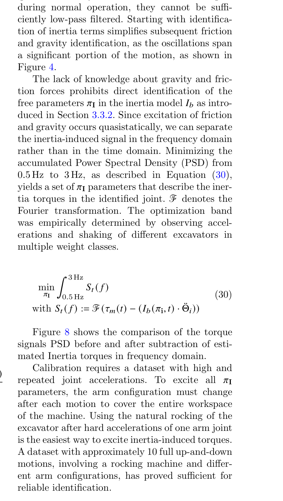
원문 Figure 8 · PDF p.10 — Figure 8 shows the comparison of the torque signals PSD before and after subtraction of esti- mated Inertia torques in frequency domain. Calibration requires a dataset with high and repeated joint accelerations. To excite all 𝜋I parameters, the arm configuration must change after each motion to cover the entire workspace of the machine. Using the natural rocking of the excavator after hard accelerations of one arm joint is the easiest way to excite inertia-induced torques. A dataset with approximately 10 full up-and-down motions, involving a rocking machine and differ- ent arm configurations, has proved sufficient for reliable identification.
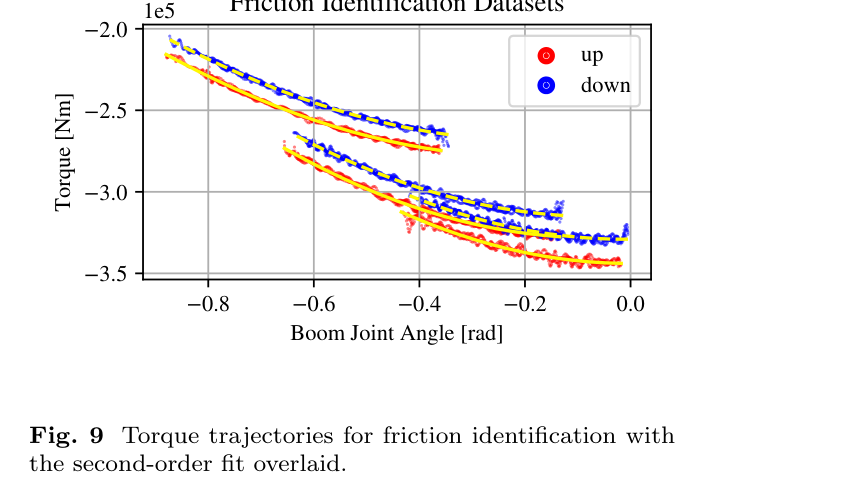
원문 Figure 9 · PDF p.11 — Fig. 9 Torque trajectories for friction identification with the second-order fit overlaid.
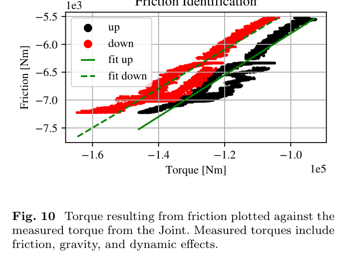
원문 Figure 10 · PDF p.11 — Fig. 10 Torque resulting from friction plotted against the measured torque from the Joint. Measured torques include friction, gravity, and dynamic effects.
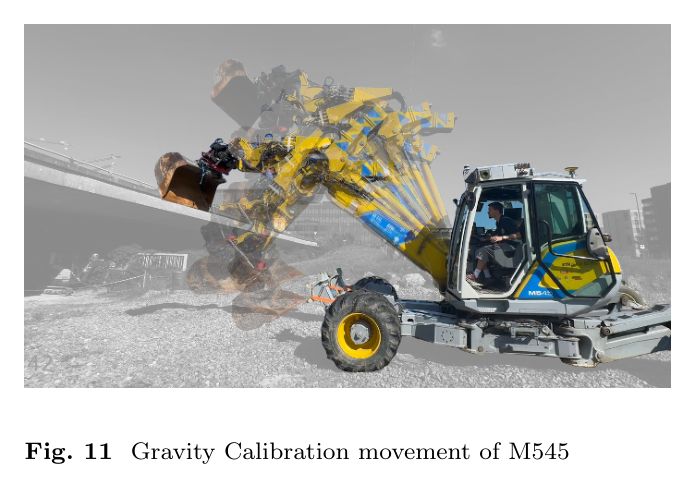
원문 Figure 11 · PDF p.12 — Fig. 11 Gravity Calibration movement of M545
4.실험 결과
실험 환경·장비·데이터
실험 플랫폼은 Menzi Muck M545 약 13.5 t 장비와 CASE250 25 t 장비다. M545는 보정 절차와 무부하 토크·페이로드 반복성을, CASE250은 3차원 외력 벡터와 상용 계량 시스템 비교를 중심으로 사용한다.
관절 위치·궤적의 외부 기준은 Leica iCON 계열 측량 시스템과 MSS400 계측계로 확보하고, CASE250 boom·stick 압력은 WIKA P-30 센서로 측정한다. 알려진 시험 중량과 580 kg 물체를 독립 기준으로 사용한다.
실험 프로토콜
실린더 크기 식별을 위한 정지 상승·하강, 0.5~3 Hz 관성 식별 운동, 네 가지 마찰 식별 구성, 저속 중력 보정 운동을 순서대로 수행한다. 전체 보정 시간은 30분 이내다.
무부하 토크는 작업공간을 덮는 15개 궤적으로 검증한다. 페이로드는 동일 물체를 여러 자세·방향에서 총 55회 들어 반복 계량하고, 3차원 힘은 580 kg 하중을 든 CASE250에서 크기와 중력 방향 각도를 비교한다.
비교 기준
준정적 모델: 중력 중심의 단순 모델로 관성·마찰 보정을 생략한다.
상용 온보드 계량 시스템: CASE250에 설치된 제조사 계량값과 동일 반복 시험에서 비교한다.
지상진실: 알려진 페이로드 질량과 중력으로 계산한 힘 벡터, 외부 위치 계측을 사용한다.
평가 지표
무부하 관절 토크의 평균·상위 98% 오차와 작업공간별 오차
55회 페이로드 추정의 평균 편향과 표준편차
외력 벡터 크기 오차와 중력 방향 각도 오차
임베디드 추정 1회의 평균·최대 실행 시간
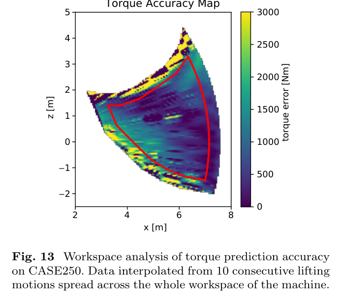
원문 Figure 13 · PDF p.13 — Fig. 13 Workspace analysis of torque prediction accuracy on CASE250. Data interpolated from 10 consecutive lifting motions spread across the whole workspace of the machine.
핵심 결과 해석
15개 무부하 궤적에서 세 관절을 합친 평균 토크 예측 오차는 644 Nm, 98번째 백분위 오차는 2,186 Nm였다. 최대 작업 반경 약 6 m에서 이 오차를 등가 중량으로 환산한 순간 최대치는 약 36 kg이다. 오차가 작업공간 전체에 균일하지는 않지만, 힘 추정에 필요한 무부하 토크를 실용 범위로 제한했다.
55회 반복 페이로드 시험에서 제안 모델은 평균 오차 5.7 kg, 표준편차 30.4 kg을 기록했다. 준정적 모델은 평균 오차 264.7 kg, 표준편차 2,263 kg이었고 상용 시스템은 101.7 kg, 51.3 kg이었다. 즉 구조화된 동역학 보정은 평균 편향과 자세별 산포를 동시에 줄였으며, 25 t 장비의 최대 정격 페이로드 기준 약 1% 수준 정확도를 달성했다.
580 kg 하중의 실제 중력 힘은 5,689.8 N이며 제안법의 평균 추정 크기는 6,183 N, 표준편차는 452 N이었다. 추정 힘과 중력 방향 사이 절대 각도는 평균 13°, 표준편차 9.2°였다. 크기 편향은 남지만 센서리스 방식으로 3차원 접촉 방향까지 복원할 수 있음을 보여준다.
임베디드 구현은 한 번의 힘 추정에 평균 0.4 ms, 최대 1.4 ms가 걸렸다. 배치 페이로드 최적화도 1초 이내이므로 실시간 제어 루프와 작업 종료 후 계량에 모두 사용할 계산 여유가 있다.
정량 결과
평가 항목
정량 결과
조건·맥락
원문 근거
무부하 토크 평균 오차
644 Nm
15개 작업공간 검증 궤적의 세 관절 종합
PDF p.13
무부하 토크 98% 오차
2,186 Nm
오차 분포의 98번째 백분위
PDF p.13
제안법 페이로드 오차
평균 5.7 kg, 표준편차 30.4 kg
총 55회 반복 계량
PDF p.14
준정적 모델 페이로드 오차
평균 264.7 kg, 표준편차 2,263 kg
동일 55회 시험
PDF p.14
상용 시스템 페이로드 오차
평균 101.7 kg, 표준편차 51.3 kg
동일 반복 시험의 제조사 계량값
PDF p.14
말단 힘 방향 오차
평균 13°, 표준편차 9.2°
580 kg 하중의 중력 방향 대비 절대 각도
PDF p.14
실시간 계산 시간
평균 0.4 ms, 최대 1.4 ms
임베디드 제어기에서 1회 추정
PDF p.14
실패 사례와 경계조건
오일 이동이나 부착물 내부 유체의 위치 변화는 등가 무게중심을 바꿔 자세별 잔차를 만든다.
단순화한 마찰 모델은 온도, 방향 전환, 저속 stick-slip을 모두 설명하지 못한다.
각속도·가속도 계산의 센서 노이즈와 지면 경사는 외력 방향 추정 오차로 전달된다.
Coriolis 항을 생략했으므로 더 빠른 동작에서는 현재 정확도가 유지된다고 단정할 수 없다.
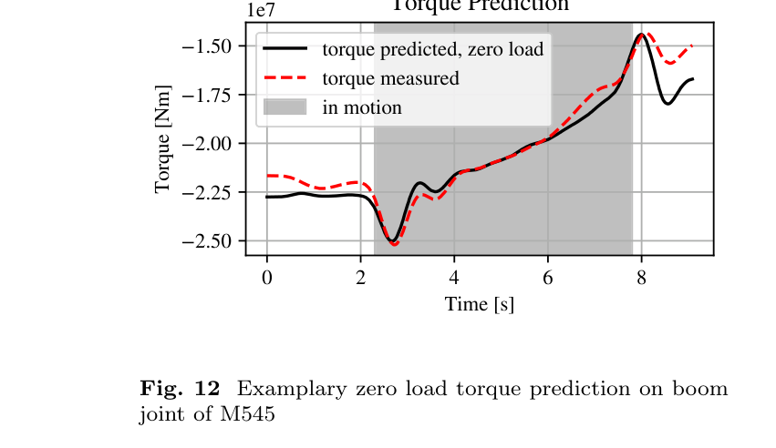
원문 Figure 12 · PDF p.13 — Fig. 12 Examplary zero load torque prediction on boom joint of M545
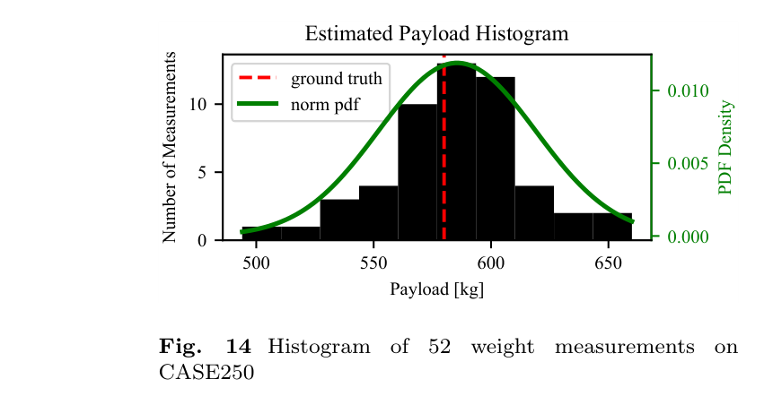
원문 Figure 14 · PDF p.14 — Fig. 14 Histogram of 52 weight measurements on CASE250
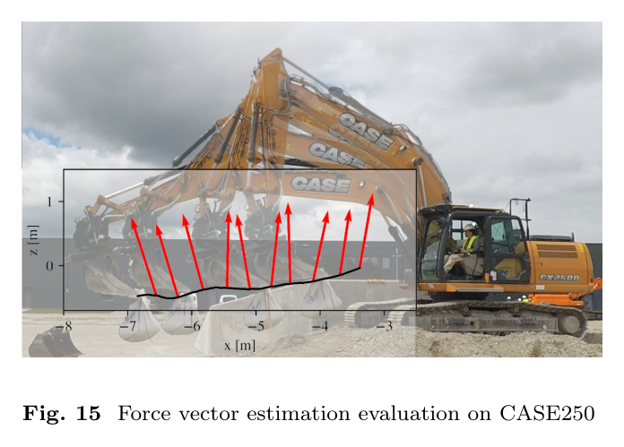
원문 Figure 15 · PDF p.14 — Fig. 15 Force vector estimation evaluation on CASE250
5.한계 및 향후 연구
현재 한계
검증은 알려진 페이로드와 무부하 궤적 중심이며 실제 토양 절삭의 시변 접촉력 정확도는 직접 검증하지 않았다.
마찰과 오일 이동을 단순화했고 온도·마모에 따른 장기 파라미터 변화는 다루지 않았다.
빠른 운전에서 커질 수 있는 Coriolis와 유압 압축성·호스 동역학을 모델에서 제외했다.
580 kg 힘 벡터 시험에서 크기 편향과 13° 평균 방향 오차가 남아 정밀 임피던스 제어에는 추가 보정이 필요하다.
향후 연구
추정 외력을 이용한 말단 임피던스 제어와 지중 충돌 감지, 동력 제한 제어를 폐루프로 검증한다.
비균질 토양의 grading, demolition 등 실제 접촉 작업에서 힘 추정의 작업 성능 기여를 평가한다.
마찰과 Coriolis 모델을 확장하고 상태 관측기를 도입해 미분 노이즈와 동적 잔차를 줄인다.
자동 보정 및 학습 기반 잔차 보상으로 장비·부착물 교체와 장기 드리프트에 대응한다.
6.한마디로 정리
핵심 방법은?
압력-토크 변환과 중력·관성·마찰의 순차 물리 보정을 결합해 기존 센서만으로 잔차 외력을 복원한다.
핵심 결과는?
55회 계량에서 평균 5.7 kg 오차, 580 kg 하중에서 평균 13° 방향 오차, 평균 0.4 ms 실행을 달성했다.
한계는?
토양 절삭력 검증, 빠른 동작의 생략 동역학, 온도·마모에 따른 마찰 변화와 힘 크기 편향이 남는다.
#제어·MPC#환경인식#압력 기반 관절토크#단계별 동역학 보정#적재량·외력 추정
나의 의견 / 우리 연구와의 연관성
이 모델은 자율 굴착 스택의 저수준 감각 기반을 제공한다. 계획기나 강화학습 정책이 위치·속도만 관측할 때 놓치는 접촉 강도와 적재량을 기존 유압 센서에서 공급할 수 있어, 안전 제한과 생산성 평가를 같은 신호로 연결한다.
고정밀 grading 제어의 pressure feedback, boulder excavation의 접촉 판정, 다중 작업 정책의 abort/reset 조건에 공통으로 쓰일 수 있다. 다만 학습 정책에 넣기 전에는 온도·장비별 드리프트에 대한 confidence와 필터링을 함께 설계해야 한다.
MPC에는 추정 외력을 제약 또는 impedance feedback으로 넣어 지면 접촉과 과부하를 구분할 수 있다.
굴착 정책에는 페이로드와 저항력 특징을 추가해 빈 버킷·암석 걸림·과도한 절삭을 온라인 판별할 수 있다.
작업 관리 계층에는 센서리스 계량값을 제공해 사이클당 생산량과 에너지 효율을 추적할 수 있다.
보정 파라미터를 장비 digital twin과 공유하면 시뮬레이션-실기 동역학 차이를 줄이는 기준 모델이 된다.
7.전체 그림·표
본문 핵심 위치에 배치하지 않은 원문 Figure와 Table을 원문 페이지 순서로 수록한다.
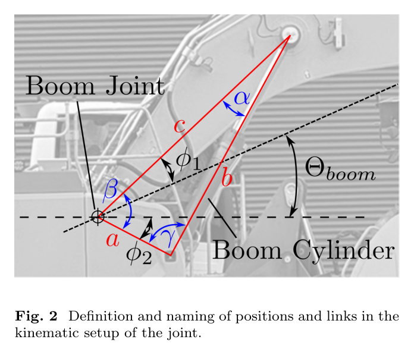
원문 Figure 2 · PDF p.4 — Fig. 2 Definition and naming of positions and links in the kinematic setup of the joint.
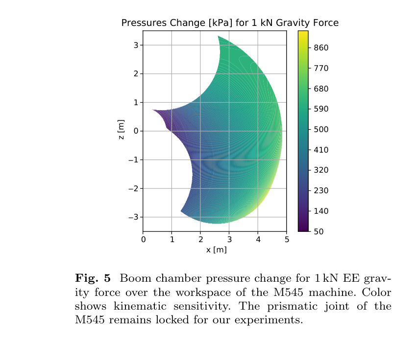
원문 Figure 5 · PDF p.9 — Fig. 5 Boom chamber pressure change for 1 kN EE grav- ity force over the workspace of the M545 machine. Color shows kinematic sensitivity. The prismatic joint of the M545 remains locked for our experiments.
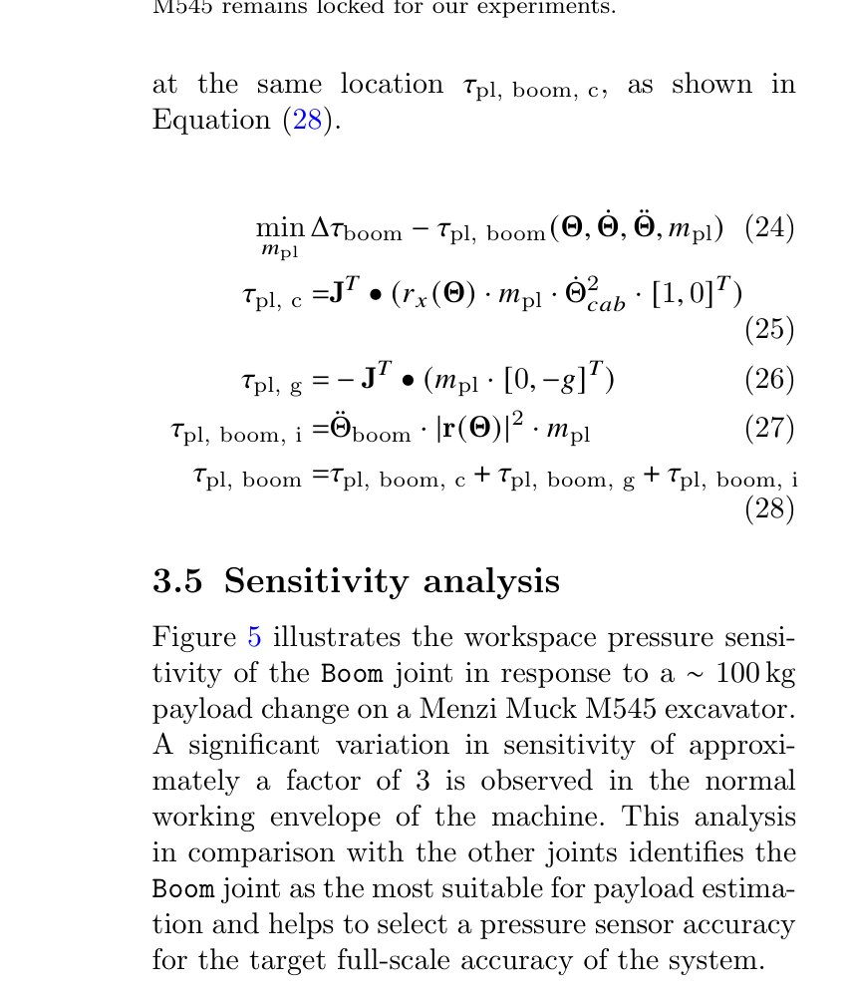
원문 Figure 5 · PDF p.9 — Figure 5 illustrates the workspace pressure sensi- tivity of the Boom joint in response to a ∼100 kg payload change on a Menzi Muck M545 excavator. A significant variation in sensitivity of approxi- mately a factor of 3 is observed in the normal working envelope of the machine. This analysis in comparison with the other joints identifies the Boom joint as the most suitable for payload estima- tion and helps to select a pressure sensor accuracy for the target full-scale accuracy of the system.
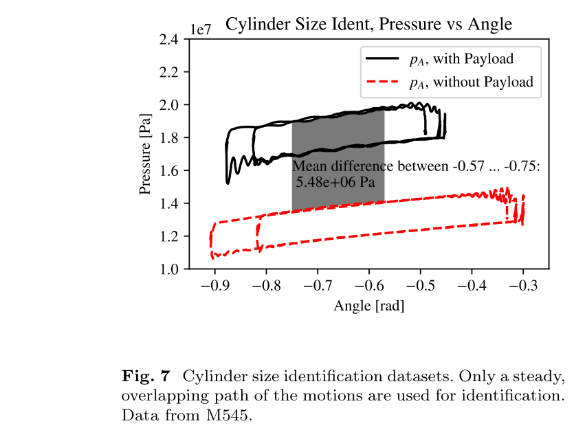
원문 Figure 7 · PDF p.10 — Fig. 7 Cylinder size identification datasets. Only a steady, overlapping path of the motions are used for identification. Data from M545.
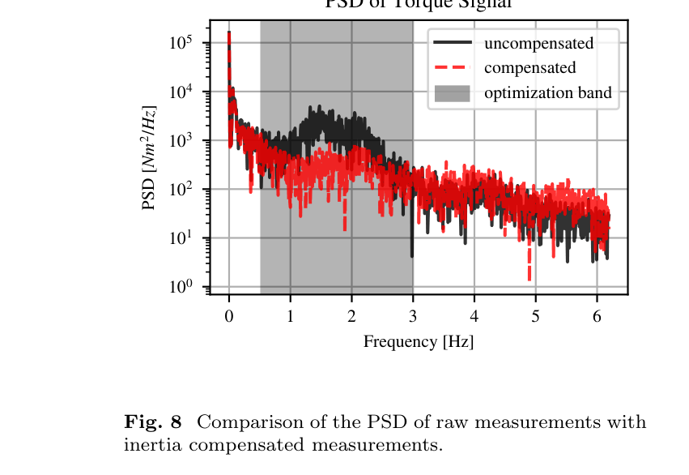
원문 Figure 8 · PDF p.11 — Fig. 8 Comparison of the PSD of raw measurements with inertia compensated measurements.
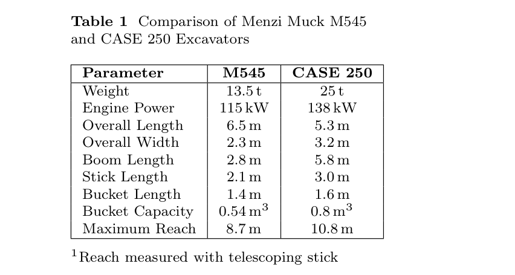
원문 Table 1 · PDF p.12 — Table 1 Comparison of Menzi Muck M545 and CASE 250 Excavators
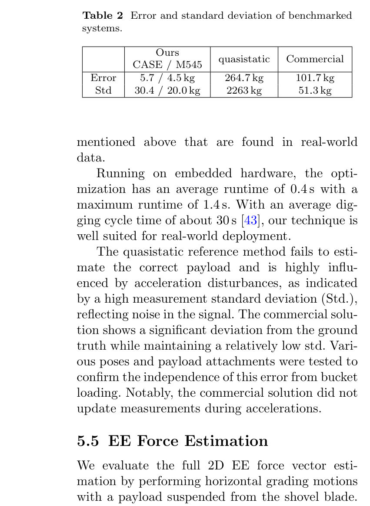
원문 Table 2 · PDF p.14 — Table 2 Error and standard deviation of benchmarked systems.